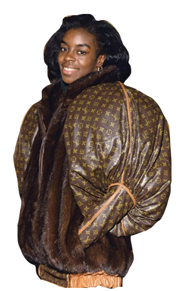
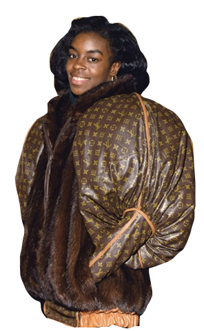

METRO
CARD
In 2017, Supreme announced that they will be releasing a number of Supreme MetroCards at specific New York City subway stations. This caused an uproar in Supreme fans, and hundreds of people flocked to subway stations in search of the coveted red MetroCards. People pumped money into the machines like some sort of slot machine, in hopes of a Supreme card coming out the other end. Just like the clothing drops, the MetroCards were soon posted on eBay for resale value ranging from fifty dollars into the hundreds.
When looking at our purchasing habits, it is apparent that we are creatures that like to feel like we belong. Our clothing is one of the most physical ways in which we know how to express ourselves and let those around us know what kind of person we want to be, or what we think we are. A logo, or a designer name, can often make us feel like we are a part of a social group, and the most elite social groups are often accessed through luxury names. Logos began as a symbol of brand integrity, like with Levi's “seal of approval”. The red tab let others know of the brand’s authenticity and the guarantee of quality. It is interesting that the logo, which was once used to guarantee quality has now become more important than the quality of the piece itself. Counterfeit and bootleg pieces are a popular way to buy into a brand’s “group” without the luxury prices. The presence of a giant logo is much more important than a luxury quality bag, thus the increase of bootleg production and sales. It is no longer about buying brand name pieces that are built to last, it is about buying brand name pieces because of the elite social group it aligns us with when we buy it. Just like with Dapper Dan’s customers, it is about power. When we wear a piece with elite connotations, it makes us feel powerful, and like we have something that not everyone else has. Value in goods used to come from the quality of the piece, the materials used, or the amount of time that went into producing it, and the logo was just the final seal of approval. However, it is now apparent that the logo itself is what holds the most power and it has become the part of the piece that holds the most value.

 
